总结
这篇文章讲的是：一个只把 diff 丢给大模型的代码审查 agent，能跑，但很快会撞到天花板。
- 基础版一天就能搭：GitHub webhook → sandbox agent → 分析 diff → 发评论。
- 但会漏 bug、不懂代码库、成本高、nitpick 多、每次跑都发现新 bug。
- 五个改进：优化 prompt、模型反转、代码库上下文、自动测试、按子任务选便宜模型。
- 同源模型会共享盲点：Claude 写、Claude 审，会漏同样的错误。
- 模型反转让 bug 发现率提升约 10%。
- 真正难的是评估：真 bug 很稀有，需要历史 PR 数据集持续 hillclimb。
原文逐段对照翻译
翻译说明：以下按原文顺序逐段翻译，保留全部技术论证、数字和例子；中文以自然、准确为目标。
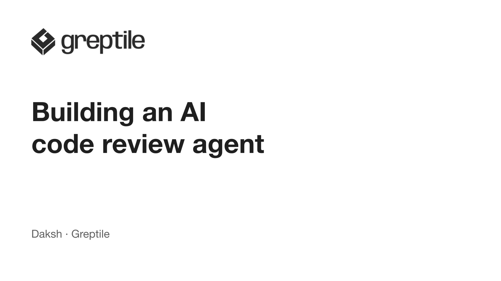
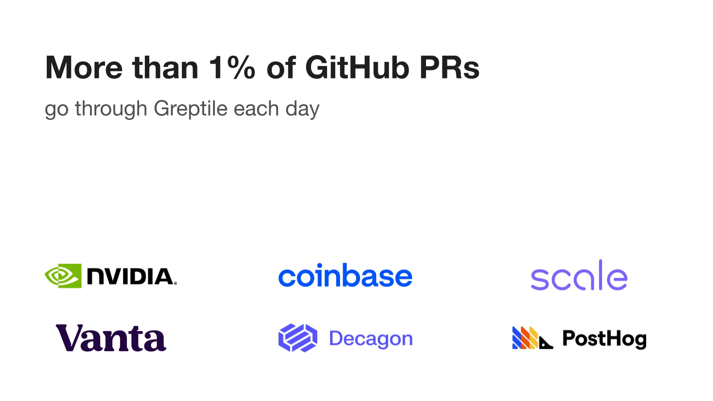
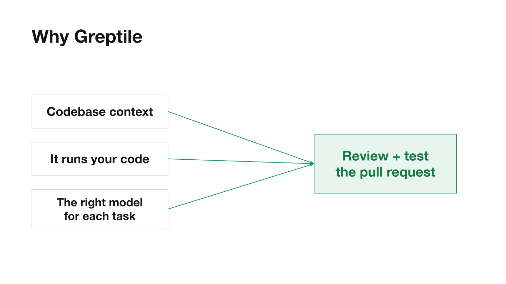
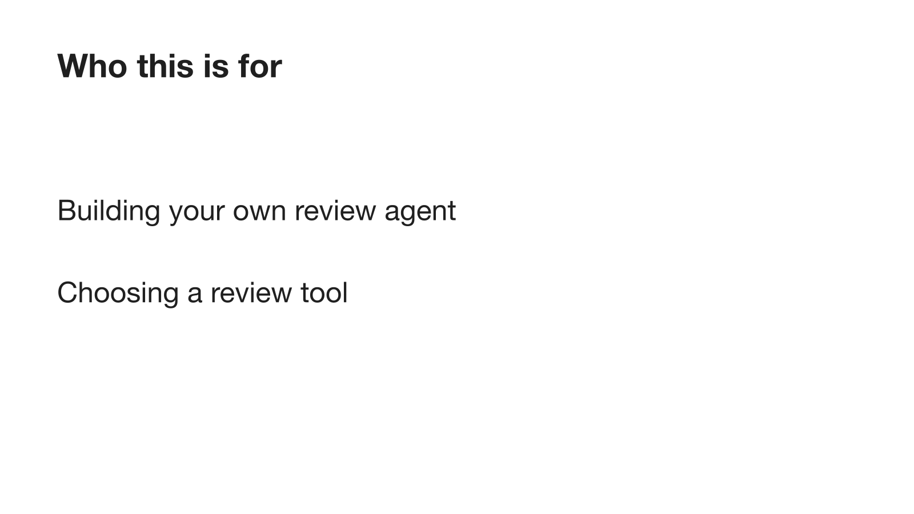
Greptile 的三个优势
My name is Daksh. I'm one of the cofounders of Greptile. We build agents that review and test pull requests, catching logic and security bugs before merge. Thousands of companies like Nvidia and Coinbase use Greptile to check their changes before merge. More than 1% of PRs on GitHub go through Greptile each day.
我是 Daksh，Greptile 的联合创始人之一。我们做的是审查和测试 PR 的 agent，在合并前抓出逻辑和安全 bug。Nvidia、Coinbase 等数千家公司都在用 Greptile 检查改动；GitHub 上每天超过 1% 的 PR 会经过 Greptile。
First, codebase context: Greptile is very good at indexing large codebases, so it can catch complex bugs that are not in the diff but second order effects of the diff.
第一，代码库上下文。Greptile 很擅长索引大型代码库，因此能发现那些不在 diff 里、但由 diff 引发的二阶 bug。
Second, Greptile runs your code: most code review agents are really just using frontier models to read the code to find bugs. Greptile actually installs your dependencies and spins up a dev server in a sandbox, clicks around, mocks API inputs, pressure tests endpoints to find things that AI alone could never catch.
第二，Greptile 会真正运行你的代码。大多数 review agent 只是让前沿模型读代码找 bug；Greptile 会在沙箱里安装依赖、启动 dev server、点来点去、mock API 输入、压测 endpoint，去找单靠读代码永远发现不了的问题。
Third, we're really good at allocating inference. We use the right-sized model, both frontier and open source, for each subtask of the code review and testing process. By doing this, we can get better results than pure Codex or Claude Code review at a tenth of the cost.
第三，我们很擅长分配推理资源。review 和测试流程的每个子任务，都会选合适大小的模型，前沿模型和开源模型都用。这样做的结果，比纯用 Codex 或 Claude Code 审查更好，成本却只有十分之一。
基础工作流：一天能搭，但问题很多
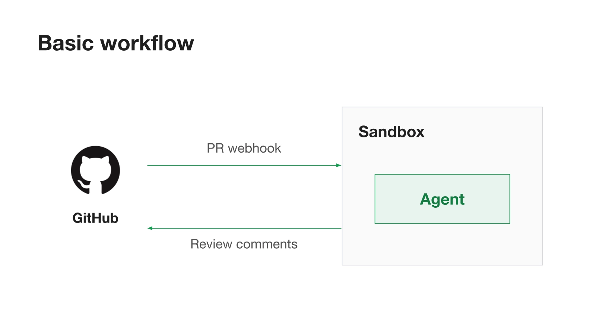
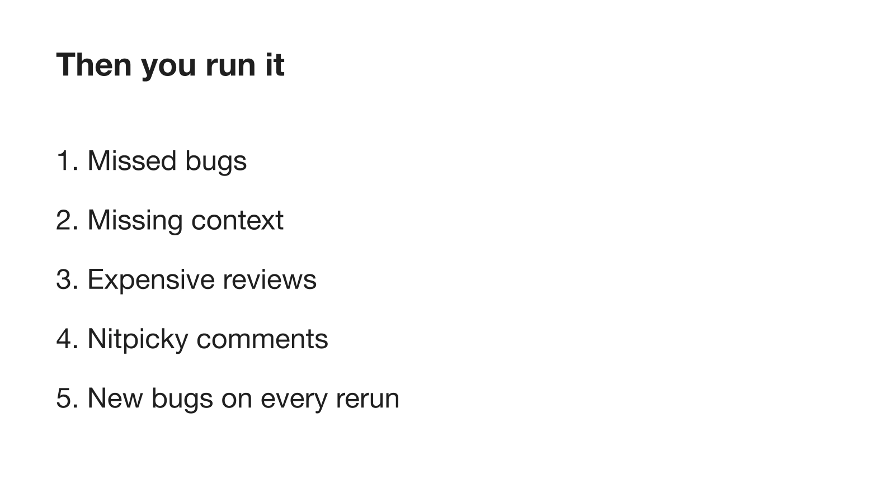
At the core, you will need some type of sandbox running an agent. It will receive webhooks from GitHub when there are new pull requests ready for review. It will analyze the changes, detect bugs, and post comments back to GitHub. You can probably build this in a day.
核心结构很简单：一个跑着 agent 的 sandbox，接收 GitHub 的 PR webhook，分析改动、发现 bug，再把评论发回 GitHub。这套东西大概一天就能搭出来。
You will notice a couple of things go wrong: it will miss a lot of bugs, and you won't know what it's missing; it won't deeply understand your codebase, particularly if it spans multiple repos; it will be very expensive, at least $3-5, up to $10-20 per run, and it will be run 2-3 times per PR; it will make a lot of nitpicky comments; it will keep finding new bugs every time you run it instead of reporting everything at once.
然后你会发现问题很多：漏掉大量 bug，而且你不知道漏了什么；不理解代码库，尤其是跨多个 repo 时；很贵，每次 3–5 美元，最高 10–20 美元，每个 PR 还要跑 2–3 次；大量 nitpick 惹恼工程师；每次跑都发现新 bug，而不是一次报全。
改进一：优化 Prompt
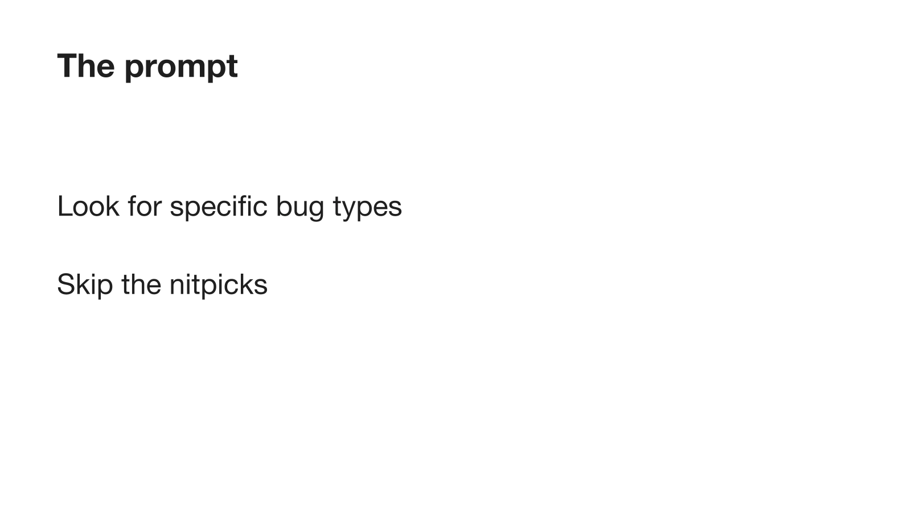
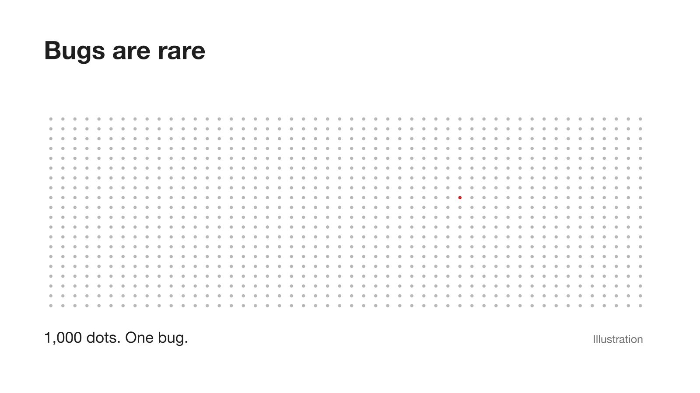
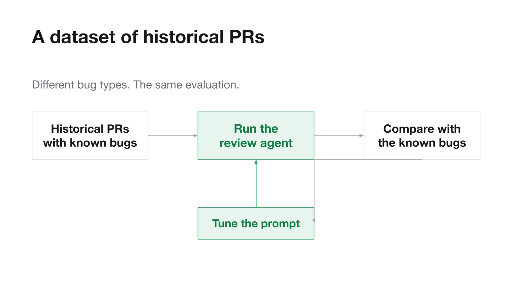
The lowest hanging fruit is to make the prompt better. You can instruct it to look for specific types of bugs, and also specifically tell it not to make nitpicky comments. You can get quite far with this, but it's surprisingly hard to evaluate if your improvements are working.
最容易摘的果子是改 prompt：让它专注特定类型的 bug，并明确不要 nitpick。这能带来不少提升，但难点在于评估——你很难判断改动到底有没有让 review 变好。
Evaluating review agents is very hard because true bugs are very rare. No single company has enough PRs moving through to be able to iterate the agent's performance. Greptile has the advantage of having millions of PRs going through it every month.
Review agent 很难评估，因为真正的 bug 非常稀有。单家公司没有足够多的 PR 来迭代性能；Greptile 的优势是每月有数百万 PR 经过，能持续观察改动是否提高了 bug 发现率。
One way you can improve your mileage is by building a dataset of historic PRs with a diversity of bugs and hillclimb those.
一个实用办法是：建一个历史 PR 数据集，里面包含多种类型的 bug，然后持续在这套数据上 hillclimb。
改进二：模型反转
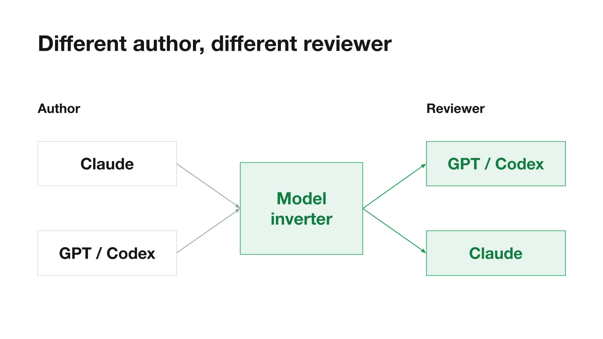
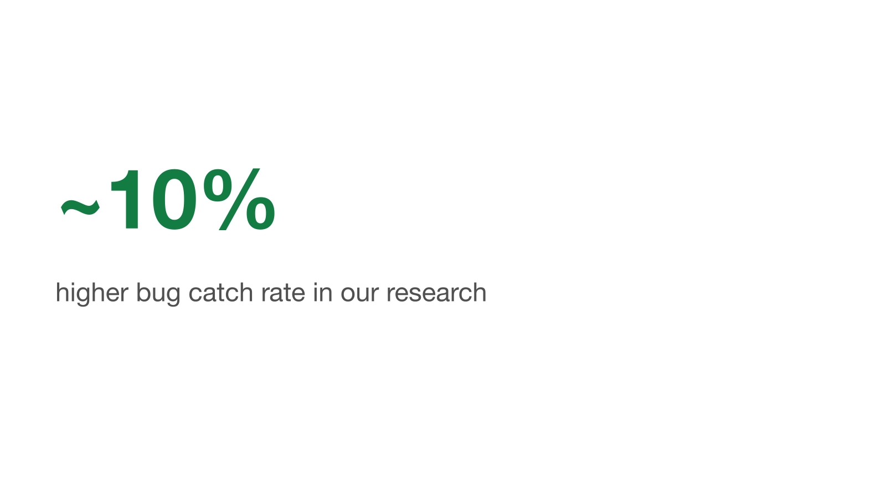
If your company uses Claude to code, and you used Claude models for review, they will miss a lot of bugs. This is because the author and reviewer will have similar blind spots. As an example, Claude models are twice as likely as GPT models to introduce n+1 errors, and are also around twice as likely to miss them during review.
如果公司用 Claude 写代码，又用 Claude 审查，会漏掉很多 bug，因为作者和 reviewer 有相似的盲点。比如 Claude 引入 n+1 错误的概率是 GPT 的两倍，审查时漏掉 n+1 的概率也大约是两倍。
You should consider using Codex models to review Claude's code and vice versa. This is easy if your company only uses one coding model. If everyone is on Claude, use GPT models in your review agent. In our research on model inversion, bug catch rates go up ~10% when you do this.
所以应该考虑用 Codex 审 Claude 的代码，反之亦然。如果公司只用一种 coding model，这很简单：大家都用 Claude，就让 review agent 用 GPT。我们对“模型反转”的研究显示，bug 发现率大约提升 10%。
That number might seem small, but every additional bug that doesn't reach your customers is a big deal. Greptile of course does model inversion out of the box.
这个数字看起来不大，但每一个没流到客户手里的 bug 都很重要。Greptile 当然默认就会做模型反转。
改进三：代码库上下文
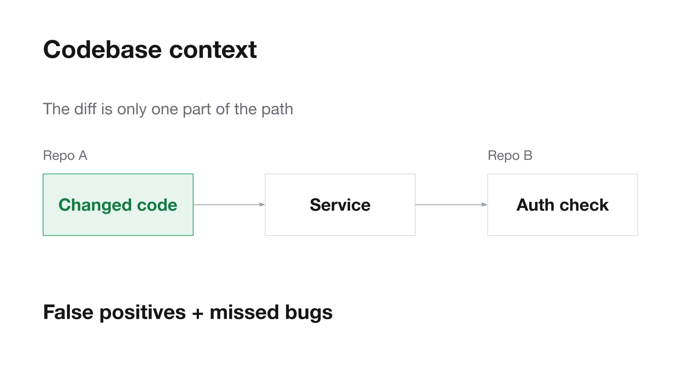
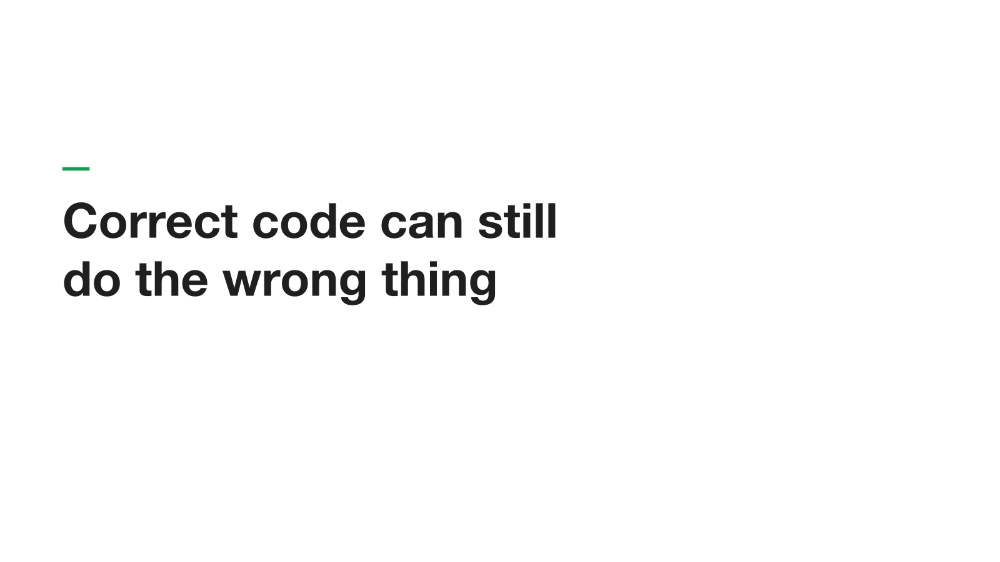
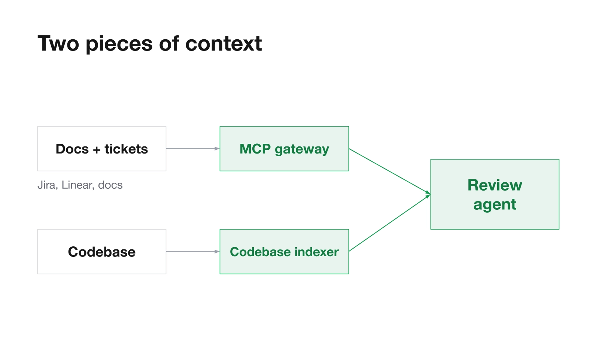
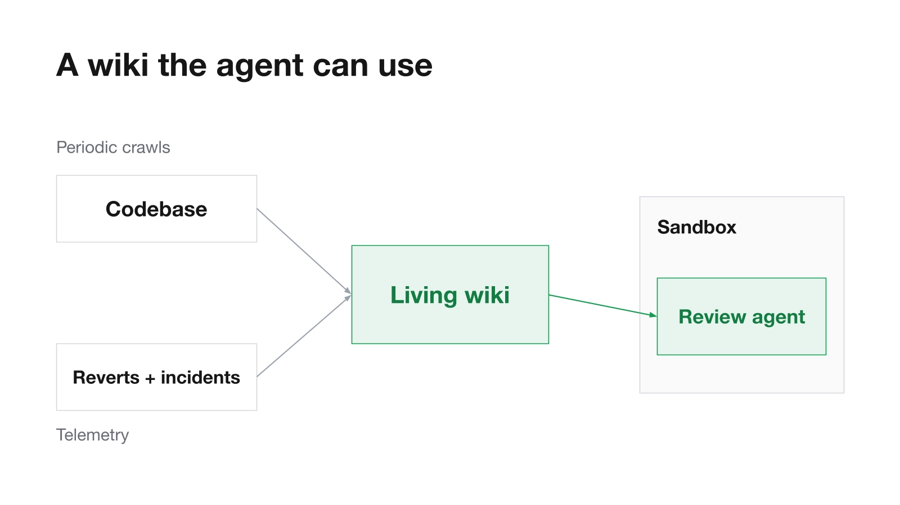
In spite of everything, your review agent will likely not understand your codebase. This will lead it to make false positive comments, or more importantly, entirely miss complex chained bugs. A common example is auth bypasses, which require a pretty intricate understanding of how auth works in the application.
即便如此，review agent 仍然很可能不理解你的代码库。结果是误报，或者更严重：完全漏掉复杂的链式 bug。常见例子是 auth bypass，抓住它需要相当精细地理解应用的认证机制。
The review agent will also not fully understand intent. Sometimes code is perfectly correct but either does the wrong thing, or an incomplete thing. You can resolve this in two steps: build an MCP gateway to give it access to your docs, Jira, Linear, etc.; and build a codebase indexer.
Review agent 也不完全理解意图。代码可能完全正确，但做的是错事，或者只做了一半。解决分两步：建一个 MCP gateway，让它能访问文档、Jira、Linear 等；再建一个代码库索引器。
Building a codebase indexer is pretty involved. One way to do it is to have agents crawl your codebase periodically and maintain some type of wiki. You should also track reverts and incidents and store them in your wiki. This way your review agents will know what has gone wrong in the past.
代码库索引器不简单。一种做法是让 agent 周期性爬代码库，维护一份 wiki。还应该跟踪 revert 和 incident，把它们也存进 wiki。这样 review agent 就能知道过去出过什么问题，避免重复犯错。
This involves building some type of integration layer with your telemetry stack. You can inject this wiki into the agent's sandbox, allowing it to go in with an understanding of the codebase and the product, leading to more bugs caught and fewer false positives.
这需要和 telemetry 栈做集成。把 wiki 注入 agent 的 sandbox，让它带着对代码库和产品的理解进入 review，就能抓到更多 bug、减少误报。
改进四：自主测试
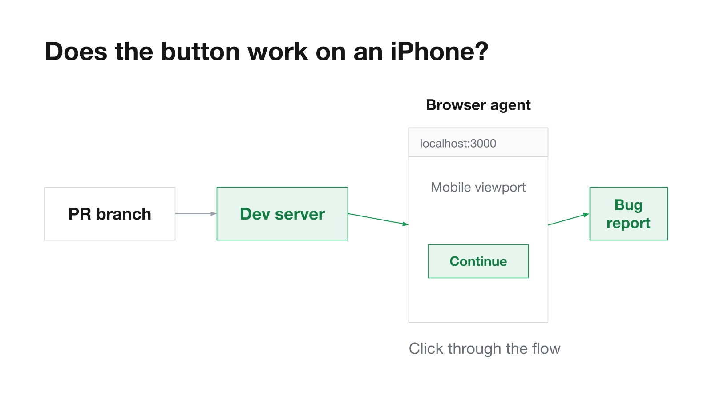
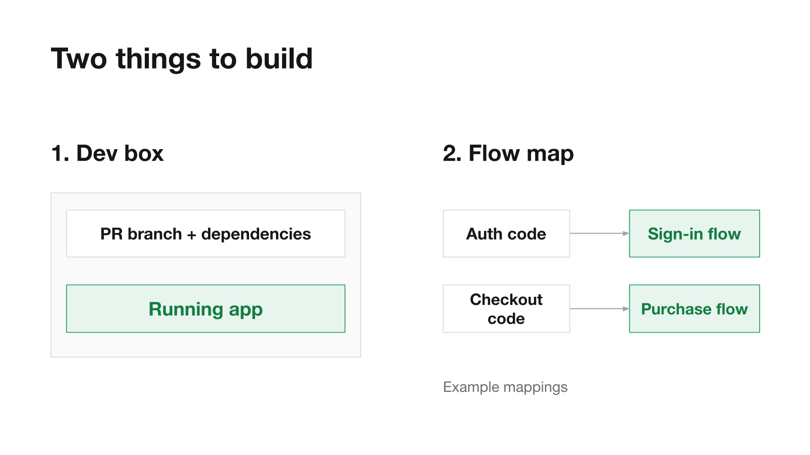
Imagine you wanted to build a system to catch UI bugs in a web application. Maybe you want to make sure certain buttons are not hidden when the site is opened on an iPhone. In theory, you could shove the React diff into a very smart model and tell you if the code is buggy. A much better way is to spin up a dev server, open a browser, and use computer use to click through every path.
假设要抓 Web 应用的 UI bug，比如确保在 iPhone 上打开时某些按钮不会被隐藏。理论上可以把 React diff 丢给一个很聪明的模型，让它判断有没有 bug；更好的方式是启动 dev server、打开浏览器，用 computer use 把每条路径点一遍。
Fortunately, frontier models are quite good at computer use. The parts you'll need to build are: very good dev boxes that can quickly spin up a PR branch to test it; and a mapping of codebase sections to testable user flows.
前沿模型现在很擅长 computer use。你需要建两块：足够好的 dev box，能快速拉起 PR 分支来测试；以及“代码库区域 → 可测试用户流程”的映射。
For the former, we went with large configurable VMs, but even so we usually need FDEs from our team to help customers set up these VMs. For the latter, we use our knowledge base, where Greptile tracks the flows related to each part of the codebase. You should be able to use AI to produce this.
前者我们用的是大型可配置 VM，但即便如此，通常还需要我们的 FDE 帮客户配置。后者用知识库：Greptile 会跟踪每个代码区域对应的用户流程。这个映射应该可以用 AI 生成。
改进五：部分任务用便宜模型
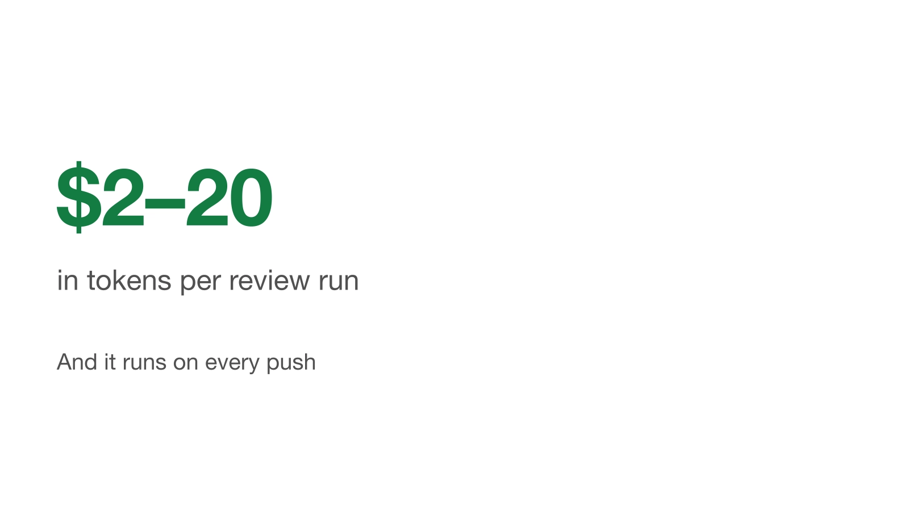
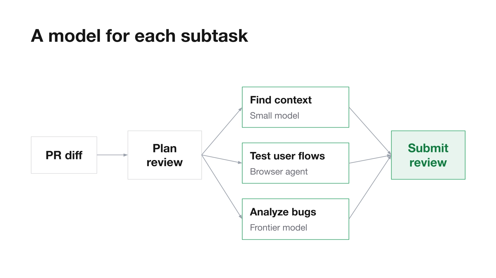
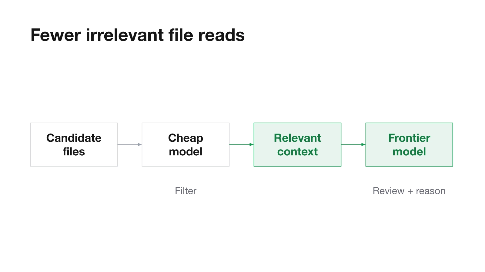
If you do all of the above, you'll start to see good results, but each review run will likely cost you anywhere from $2 to $20 in token costs. Since your reviewer is likely to run on every push to a PR branch, this can add up pretty quickly.
做完上面这些，效果会明显变好，但每次 review 的 token 成本可能仍在 2–20 美元。reviewer 往往每次 push 都要跑，成本很快会累积。
Fortunately, reviewing and testing a PR is made up of a pretty consistent set of subtasks. That means you can pick the perfect model for each subtask and drastically reduce costs and maintain or improve performance vs. using only frontier models.
好消息是，review 和测试由一组相对固定的子任务组成。你可以为每个子任务挑最合适的模型，大幅降本，同时保持甚至提升效果，而不是所有步骤都用前沿模型。
As an example, much of the token use in review is file reads. A majority of the files read are clearly not relevant to the change, but the model only discovers this after reading the file. Using a very light and cheap model for this can greatly reduce the cost of file reads.
例如，review 里大量 token 花在读文件。大多数文件明显和改动无关，但模型只有读了才知道。用很轻、很便宜的模型做初筛，可以大幅降低读文件成本，再把高信号的文件交给前沿模型。
A great code review agent combines codebase context, testing, reliable evaluations, and the right model for each task to catch bugs efficiently.
一个好的代码审查 agent，要把代码库上下文、真实测试、可靠评估和“每个任务选对模型”结合起来，才能高效地抓 bug。
学习者视角
关键收获
- 只读 diff 的 review 天花板很低。 复杂 bug 往往在 diff 之外，需要代码库上下文和真实运行。
- 同源模型有共享盲点。 作者和 reviewer 用同一模型，会漏同样的错误。
- 评估是最大瓶颈。 真 bug 稀有，必须建历史数据集，否则无法判断改动是否有效。
- 自动测试是差异化能力。 启动 dev server、点浏览器、压 endpoint，能发现静态分析发现不了的问题。
- 成本可以按子任务优化。 不是所有步骤都需要前沿模型。
放回课程里看
这篇是 Week 6 的产品视角：它把代码审查 agent 拆成上下文、执行、评估、模型路由四个工程问题。和 Coordinating Specialist Review Agents 对比，Cloudflare 强调编排，Greptile 强调“真正运行代码”。
一个反直觉点
很多人以为审查模型越强越好。Greptile 的结论是：同源模型会共享盲点，换一个模型反而能多抓 10% 的 bug。
拓展
思考题
- 你的 review agent 只看 diff，还是能访问代码库、文档、issue、运行时？
- 如果作者和 reviewer 用同一模型，你会怎么检测共享盲点？
- 自动测试的 ROI 在哪些场景最高？哪些场景不值得？
- 你如何建一个“历史 bug 数据集”来评估 review agent？
练习
为你的项目设计一个 review agent 的“上下文包”：
- 代码库索引；
- 相关 docs / issue；
- 历史 revert / incident；
- 可测试用户流程；
- 每个子任务的模型选择。
然后写一条“这个 agent 仍然抓不到什么”的局限说明。